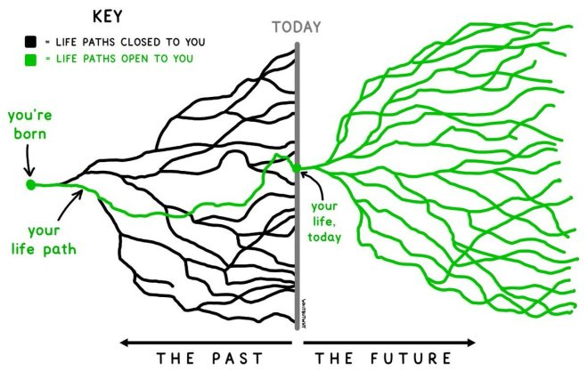

面试官毁掉技术面试的三大法宝
在伴鱼的三年，我作为面试官参与超过 100 场面试，遇到许多风格各异的候选人；最近的两个月里，我也作为候选人参与将近 30 轮面试，见过不少形形色色的面试官。在参与这些面试的过程中，我心中逐渐累积了一些对面试的看法，本文我想站在面试官的角度，谈一谈面试官毁掉技术面试的三大法宝。
1. 面试目标
在我眼里，无论是对面试官还是候选人，每场技术面试的终极目标都是：在有限的时间内尽可能多地获取对方的信息，并利用这些信息做出最终决定 —— 用人单位决定是否录用，候选人决定是否入职。
2. 三大法宝
作为面试官，要毁掉一场技术面试只需要掌握以下三点：
2.1 以寻找弱点为面试目标
软件开发实践涉及的领域种类繁多、内容丰富，且每个领域各自深难见底，深耕数十年者大有人在。在这样一个知识空间中，工程师的成长路径、知识结构有无限种可能：

正因为面试双方的经历都很独特，面试官要找到候选人的弱点轻而易举，找不到反而值得面试官反思。候选人对问题模棱两可、不知所措，是一件稀松平常的事情。
我们来分析一下这对双方的面试目标有何帮助：面试官获取的信息就是「候选人不懂 A 知识点」，至于其它方面，比如候选人思考的角度、表达的方式、过去的经验，则没有收获；类似地，候选人获取的信息也只是「某司某部门的 X 面面试官会问 A 知识点」。除了信息量有限，当面试官发现候选人的弱点时，有可能产生恶魔效应：「这都不懂，其它方面他能行？」在评价候选人其它方面时戴上有色眼镜。事实上，找到候选人的弱点对于促进面试目标达成的帮助并不大。
如果想毁掉一场面试，面试官平时就需要刻意积累一些冷门、偏门的知识点以及应对罕见场景的奇技淫巧，从而在面试中实施精准的降维打击，暴露候选人的更多弱点。定位弱点后，还应继续做出有针对性的 360 度无死角追问，由点及面地挖掘出候选人的知识盲区，让他产生自我怀疑，最后失魂落魄地被人力同学送走。
YC Startup School 的导师 Kevin Hale 在讲解如何评价创业点子时说过：
The average investor or a lot of the investors that you see when you talk to them about your idea, it feels like they're trying to poke holes in your idea. They're trying to figure out what's wrong with it and then thrying to show just how smart they are.
一般水平或者你见到的大多数投资者，当与他们谈论创业点子时，你能感觉他们正试图在你的想法上挑刺。他们试图找出这些想法的问题所在，并展示他们有多聪明。
评价创业点子与评价候选人十分类似，评价者需要根据申请信息和几轮面谈来获取所需信息，并做出是否投资或录用的决定。而 Kevin 评价创业点子的理念是：
I figure out all the ways that I think whatever you're doing could possibly become big.
我会想象你做的事情可以变伟大的所有可能性。
类似地我认为，如果面试官想认真经营一场面试，应该更多地了解候选人，包括但不限于花几分钟时间阅读其简历、博客，找到他的强项，想象他在目标岗位上的可能性，然后通过面试来验证。
2.2 充分利用角色优势
面试官中的「官」暗示了它天生的角色优势，这也给面试官与候选人在无形之中带来一层「官民」关系。在刻板印象中，官是掌握权势、拥有话语权的一方，民是居于弱势、听凭摆布的一方。如果面试官想利用这种角色优势毁掉一场面试，有几个简单易行的方法：
首先，提问时要采用命令式口吻，如：
"来，把这个数据库 ACID 的含义给我说一下"
"这个题写一下，我只需要最优的解法，时间 20 分钟，写好了叫我"
"别说那些没有意义的，挑重点"
其次，提问过程不给候选人选择机会，如：
"我看你用过数据库，我们聊聊 MySQL 中 InnoDB 和 MyISAM 引擎的区别吧"
"我看你写过 Go，说说三色标记法是什么"
"我看你在这个项目里面用过 ES，说说 ES 的数据是如何存储和复制的吧"
另外，对候选人的团队、项目的实施细节刨根问底，但一旦聊到己方团队的工作内容则以商业机密为名只字不提。
我们来分析一下：命令式口吻本身就是百害而无一利，既会给候选人带来不必要的心理压力，也会降低候选人对面试官及其所代表公司的好感度，产生的是无谓的面试摩擦力；不给候选人提供选择机会不一定会阻碍信息流通，如果恰好面试官和候选人都对目标话题有比较深的见解，则从结果上看面试依然有效。但让候选人自行选择深入交谈的子话题，可以更好地了解候选人在其所擅长领域的掌握深度和广度，更为高效；对于团队、项目等信息必要的保密本身无可厚非，但如果只是单向要求，对候选人和自身双重标准，则既不利于候选人最终决断，也有损面试双方的角色公平。面试官所属和候选人供职的单位本应同等享有业务信息的保密权利，不应该因为面试角色的不对等而被区别对待。
现在有越来越多的企业，为了向候选人展示更多的尊重，避免面试官不当利用角色优势，用面试主持人的称谓来代替面试官，来给予双方角色公平的心理暗示。以我作为候选人参与过的面试经历为参考，目前只有少数外企能将这点落到实处。
2.3 脱离工作场景问问题
在有监督学习中，算法工程师需要准备打好标签的训练数据喂给预先设计好的模型，让模型逐步收敛；在微服务部署上线前，一般会先在预演环境上观察许久，确认没有异常后方才部署上线。
但是，如果机器学习模型的训练数据是劣质数据，就容易 "garbage in, garbage out"；如果预演环境与生产环境差异巨大，之前的观察便失去了意义，到线上后该出故障还得出故障。同样，如果面试中的问题过分脱离工作场景，我们只能认为通过的候选人擅长回答这类问题，而实际工作时完全是另外一回事。如果面试官想通过脱离工作场景问问题来毁掉一场面试，首先要背好八股文，比如：
数据库隔离级别有几种，分别有哪些？每个隔离级别分别怎么实现？
HTTP 建连时握手为什么是三次？挥手为什么是四次？
Golang 的 GMP 模型中的 goroutine 调度策略是什么？
解释一下 Kafka 的 zero-copy？
...
平时越用不着的、越底层、看起来越高端的效果越好。其次，要拒绝互动，不给候选人提供帮助，每个问题都需要候选人自行脑补、独立完成；另外，编码不得使用 IDE，必须一次 bugfree，在线编码时要用普通文档，不提供语法高亮、自动缩进和联想功能，现场编码时必须在白板或白纸上进行，并且要求一次性通过所有测试用例。
脱离工作场景问问题往往会使得达成面试目标事倍功半：首先，问八股得八股，背八股是面试官与候选人双方在面试前抱佛脚的默契，问八股捕获到的信息很有限，且参考性很小，在实际工作中如若遇到八股中的问题，利用搜索引擎便可轻松解决；没有沟通和互动，与工作中合作开发的常态相违背，单兵作战是编程，团体合作才是软件工程。双方本可以利用交流、互动的过程获取有关对方的软性信息，体会一起工作的感觉；关于编码，我相信没有工程师在工作中不使用 IDE，也没有工程师在工作中一次性写出 bugfree 的代码，甚至以此为荣。此外，候选人为了做到这点，平时需要格外努力训练这种工作中用不到的能力，这才是卷，在无实际意义的领域做到极度的精致。如果两位候选人，A 一次性 bugfree、思路奇快、手速惊人且方案最优，B 在面试过程中经过缜密思考开始动手，编码过程中多次修正思路并逐步优化，最终也得到最优解并通过测试用例，你会如何评价二者？我认为面试官可以得到「A 比 B 做题更加熟练」的结论，但对于二者数据结构与算法编码能力的认知，大致不会有显著区别。
3. 尾声
有的公司面试过程没有章法，面试官没有基本的培训，过程随心所欲，很容易毁掉面试。更可怕的是，这种做法会让更多同样善于毁掉面试的人加入其中，强化这种体系；有的公司面试过程有严格流程，候选人可以明显感受到面试官是经过培训、训练有素的，考察时使用的也是相对标准、不钻牛角尖的题库，面试的工具体系也比较完备，这可以有效保住公司面试效果和体验的下限，尽可能地防止企业人才浓度被稀释。无论公司多大、处于何种阶段，优化、迭代面试体系永远是一件稳赚不赔的事。
在标准化之上，还能提升的就是面试官的个人素养和魅力。毕竟在大多数情况下，受限于人性，只有优秀的面试官才能吸引到优秀的技术人才。作为面试官，提升自身素养和技术积累，为公司把守好人才关口，让团队始终葆有生命力，虽不能带来直接的业绩，但这才是个人和团队成长的捷径。